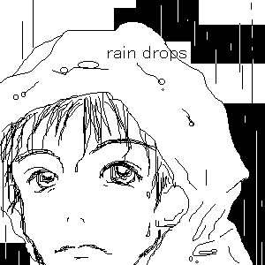

October.2002
またもや卓也でございます…(笑)。ハードボイルドな雨男？
今回は初めて笑わない卓也です。よく考えたらどの絵も笑ってるんです。なんだかすごい。
翠蘭さんのHP『Juwelry Thief』で描かせて頂きました。
私の前に描いてらっしゃった方の絵に勝手に触発されまして、モノクロ画を描いてみました。
一応色を「モノトーン」という事にしちゃったのですが、これって色名なんでしょうか。
関東〜北海道まで直撃した台風記念の一枚。